Image Warping and Mosaicing
CS 180 Project 4 — Part A
This project was hard!! But I enjoyed getting to mess around with looking at image warps. Homographies are interesting! It was fun to have linear algebra come into play.
A.1: Shoot the Pictures
I walked around near Gateway and took pictures of nearby buildings. I also took a picture of my room when I started on the project. Most of the images have a left<->right rotation between them, so I took one of a light pole where I did an up<->down rotation.
VLSB
Li Ka Shing & Anchor House
My room
A.2: Recover Homographies
System of equations
For each correspondence (x1, y1) → (x2, y2), I fix h33 = 1 and set up the following system of equations:
[ −x1 −y1 −1 0 0 0 x2*x1 x2*y1 ] h = −x2
[ 0 0 0 −x1 −y1 −1 y2*x1 y2*y1 ] h = −y2
h = [h11, h12, h13, h21, h22, h23, h31, h32]ᵀ
h = argmin ||Ah − b||²Then, with N correspondences, I stack those two rows over and over again. I used 6 correspondence points, which makes the system overdetermined. To solve, I use for Ah = b using least squares. Then, with my 8 estimated values for H, I can reshape them into a 3x3 matrix and fill in the bottom right corner as 1.
My implementation of computeH:
def computeH(im1_pts, im2_pts):
#a1: -x1, -y1, -1, 0, 0, 0, (x2/z2)*x1, (y2/z2)*x1
#a2: 0, 0, 0, -x1, -y1, -1, (y2/z2)*x1, (y2/z2)*y1
# solve Ah = b
#im1_pts: Nx2, im2_pts: Nx2
N = im1_pts.shape[0]
A = np.zeros((2*N, 8))
b = np.zeros(N*2)
for i in range(N):
x1, y1 = im1_pts[i]
x2, y2 = im2_pts[i]
A[2*i] = [-x1, -y1, -1, 0, 0, 0, x2*x1, x2*y1]
A[2*i+1] = [0, 0, 0, -x1, -y1, -1, y2*x1, y2*y1]
b[2*i] = -x2
b[2*i+1] = -y2
# solves Ah = 0 with linear least squares
h, res, rank, s = np.linalg.lstsq(A, b)
#reshape to 3, 3 and fill in bottom right conrer
H = np.append(h, 1).reshape(3, 3)
return HSelecting correspondences
I wrote a script using plt.ginput to select correspondences and save them as arrays. I mostly picked spots that were distinct corners or easy for me to remember when I had to re-click them on the second image.
VLSB correspondences
Recovered homography: VLSB image 1 → image 2
Here is the recovered homography matrix that my code printed for the VLSB correspondences:
H = [[ 1.44561155, −0.00606915, −1225.48942 ],
[ 0.18716109, 1.28609506, −480.43394 ],
[ 0.00010725, 0.00000668, 1.00000 ]]Lightpole correspondences
LKS & Anchor House correspondences
A.3: Warp the Images
I implemented image warping using inverse warping! Remembering to work with homogeneous coordinates and keep track of the difference between x and y and height and width was difficult at times. I implemented nearest-neighbor and bilinear interpolation. Nearest-neighbor interpolation fills the pixel with the value of the nearest pixel in the source image, while bilinear interpolation takes a weighted average of the 4 nearest pixels, weighted based on the distance to each of those pixels. Here is my code:
#inverse warping
def warpImageNearestNeighbor(im1, im2, H):
inv_H = np.linalg.inv(H)
# for each pix in im2, find the nearest pix in im1
h1, w1 = im1.shape[:2]
h, w = im2.shape[:2]
target = np.zeros_like(im2)
mask = np.zeros((h, w))
for i in range(h):
for j in range(w):
# x, y, z
im2_pts = np.array([j, i, 1])
im1_pts = inv_H @ im2_pts
# find correspodning point in im1 and unscale by z (homogeneous)
im1_x = round(im1_pts[0] / im1_pts[2])
im1_y = round(im1_pts[1] / im1_pts[2])
# grab points that actually exist
if 0 <= im1_x < w1 and 0 <= im1_y < h1:
target[i, j, :] = im1[im1_y, im1_x, :]
mask[i, j] = 1
return target, mask
def warpImageBilinear(im1, im2, H):
inv_H = np.linalg.inv(H)
# average adjacent neighbors in im1
h1, w1 = im1.shape[:2]
h, w = im2.shape[:2]
target = np.zeros_like(im2)
mask = np.zeros((h, w))
for i in range(h):
for j in range(w):
# x, y, z
im2_pts = np.array([j, i, 1])
im1_pts = inv_H @ im2_pts
# find correspodning point in im1 and unscale by z (homogeneous)
im1_x = im1_pts[0] / im1_pts[2]
im1_y = im1_pts[1] / im1_pts[2]
# grab points that actually exist
# find distance to nearest pixels and interpolate
if 0 <= im1_x < w1 - 1 and 0 <= im1_y < h1 - 1:
x1, y1 = int(np.floor(im1_x)), int(np.floor(im1_y))
x2, y2 = x1 + 1, y1 + 1
dx = im1_x - x1
dy = im1_y - y1
out = dx*dy*im1[y2, x2, :] + dx*(1-dy)*im1[y1, x2, :] + (1-dx)*dy*im1[y2, x1, :] + (1-dx)*(1-dy)*im1[y1, x1, :]
target[i, j, :] = out
mask[i, j] = 1
return target, mask
VLSB: Nearest Neighbor vs. Bilinear
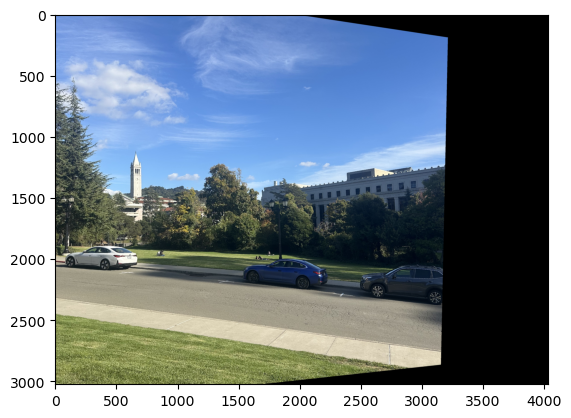
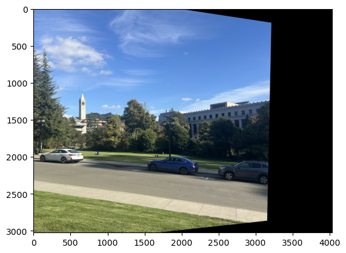
Anchor: Nearest Neighbor vs. Bilinear
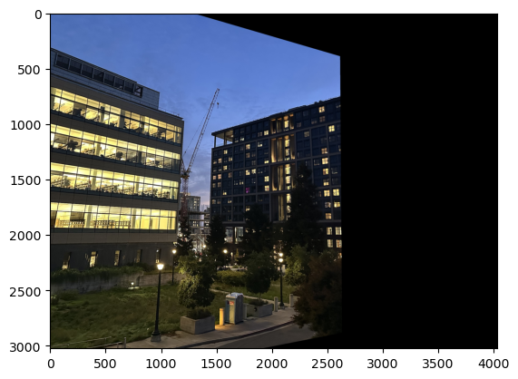
Speed and quality
Generally, the quality of bilinear interpolation is better, which makes sense since it incorporates more information about the true surroundings of a pixel. However, it does take slightly longer to run, which creates the runtime vs. quality tradeoff.
Rectification: Mondrian
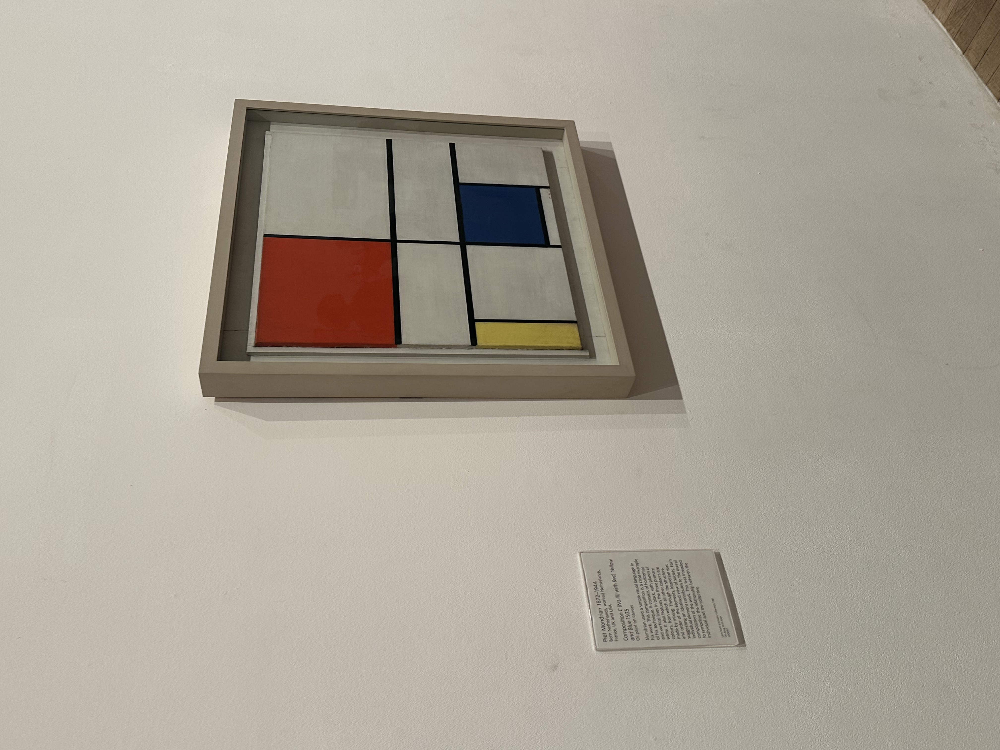
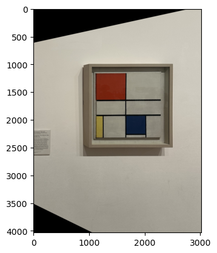
Here's a piece of art I saw in London this summer. Using my homography calculation and warping functions, I rectified it into a square!
Rectification: Star Wars
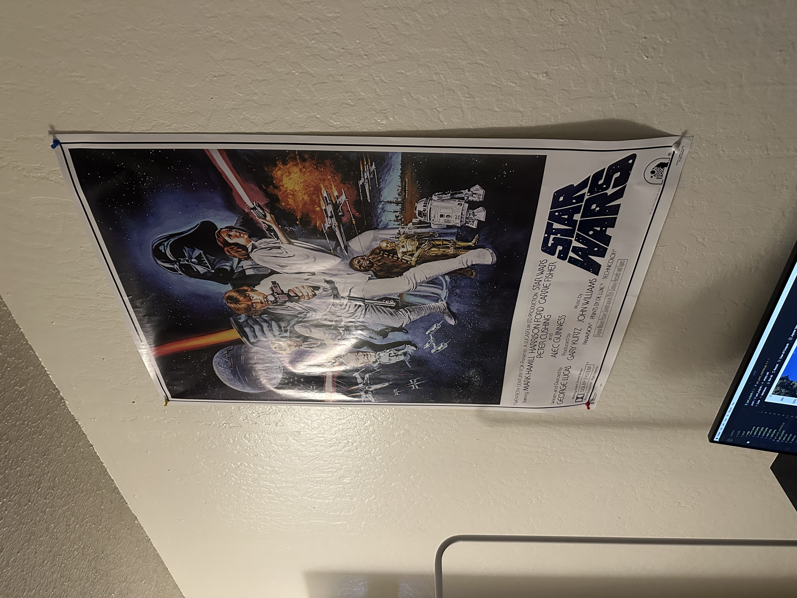
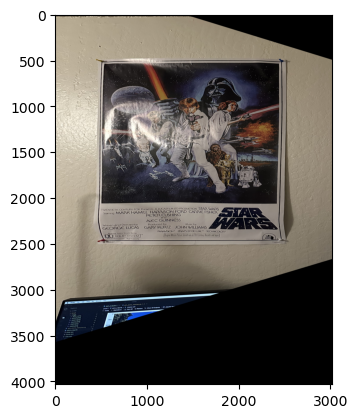
This is the Star Wars poster above my desk. Now it looks like Luke is going to shoot the viewer. AAAH!
A.4: Blend Images into a Mosaic
Finally, I took my original images and used the warping code I had to create image mosaics! All my mosaics are panoramas. First I mapped the two source images onto a shared canvas. I did this by calculating the homography for one image, using the location of the warped corners and the size of the other image to create a full canvas, and then adding a translation before my warp to make sure the warped image lands fully on my canvas without getting cut off. In order to minimize boundary effects and blend the two images together smoothly, I used distance-based blending. My warping function returns a mask that identifies where there are valid image pixels. I transformed the masks to encode the distance from the boundary. This let me do a feathered averaging between the images in the regions where they overlapped when I combined everything on the canvas.
Lightpole
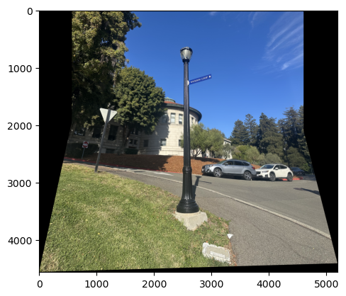
Mosaic 2: VLSB
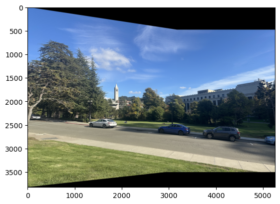
Mosaic 3: LKS & Anchor House
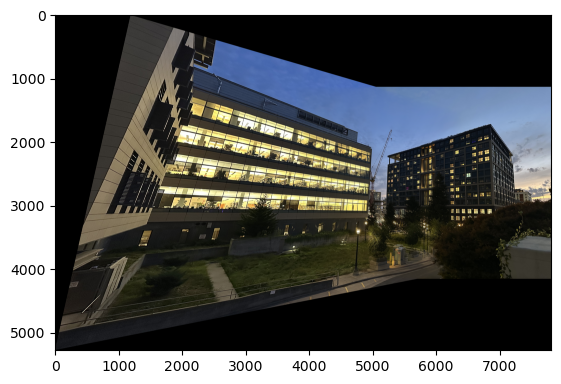
Mosaic 4: My Room
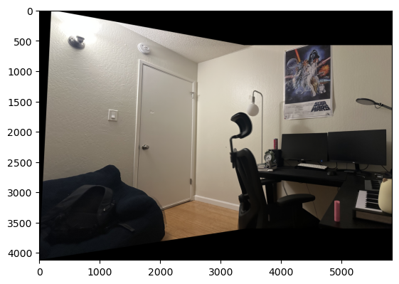